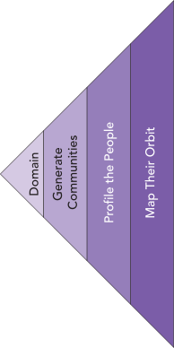

3 Cast a Wide Net
Diverge by exploring many possible communities before you choose your people
“If you only fish where it’s easy to cast, you may miss the part of the lake teeming with fish.”
Diverge Identifying Communities of People
 Most entrepreneurs start with a hunch about what to build. Expeditionary innovation starts with who. The first diamond of the process begins not with a decision, but with divergence: a deliberate effort to explore widely before you commit.
Your goal here is not to choose the perfect group right away. It is to map the human landscape around a meaningful problem space. That means resisting the pull of convenience — the temptation to pick people who are familiar, nearby, or easy to reach. True discovery requires looking past the obvious.
1. Anchor in a Problem Space
Every expedition needs a point of departure. For innovators, that means choosing a domain of friction, tension, or unresolved struggle in the world. It could be broad (“stress in education”) or narrow (“safety during the walk between subway and home”). What matters is that it matters — to real people, in tangible ways.
Start with a space, not a solution. Don’t ask “what can we build?” Ask: where is life harder than it needs to be? Anchors like these frame your exploration without narrowing it too soon.
- Food insecurity in mid-sized cities
- The burden of caregiving for aging parents
- Housing instability for gig workers
- Safety concerns for women commuting alone
- Quiet pressures faced by first-generation college students
2. Generate Communities
With a problem space in view, identify groups who live inside it. These may be formal (veterans, refugee families) or loosely defined (single parents, gig workers, late-night commuters). Your task here is range, not refinement.
Push beyond the obvious. If your anchor is school stress, don’t stop at “students.” Think about anxious high achievers, burned-out teachers, parents navigating special education, teens facing cultural stigma. Each new group adds dimension — and increases the chance you’ll spot those left out by the mainstream.
- Who experiences this problem most intensely?
- Who is largely ignored by existing solutions?
- Who has adapted in ways no one is paying attention to?
- Who is talking about this — but not being heard?
3. Profile the People
Once you have a list, sketch out what daily life might look like for each group. These are not full personas yet — just rough portraits of lived experience.
Ask: What pressures do they face? What workarounds have they normalized? What invisible effort goes into making things “work”?
You might see patterns like: juggling conflicting roles, adapting systems not designed for them, or quietly tolerating delays and confusion. Profiling helps you imagine context, not just categories. It’s empathy in its earliest form.
4. Map the Orbit
No one navigates life alone. For each group you profile, ask who else shapes their experience — family members, supervisors, landlords, caseworkers, or online influencers. These “orbit roles” often hold keys to problems and solutions alike.
Mapping the orbit prevents you from thinking too narrowly. It reminds you that innovation rarely emerges from isolated individuals; it emerges from patterns of interaction and constraint.
Use the People Divergence Sprint from the toolkit to widen the net you cast in in search of neglected or disenfranchised communities. Also, review the Halo Alert Demo to see how a team kept expanding their focus on commuters.
A Pause Before Convergence
At the end of divergence, you are not ready to choose. You are ready to reflect.
Which groups seem most underserved? Which ones live with friction that incumbents ignore? Which ones are observable and reachable in practice?
These questions belong to the next stage: convergence. But the strength of your choice later depends on the breadth of your exploration now. By diverging widely, you escape the trap of convenience, resist premature guessing, and lay the foundation for genuine discovery.